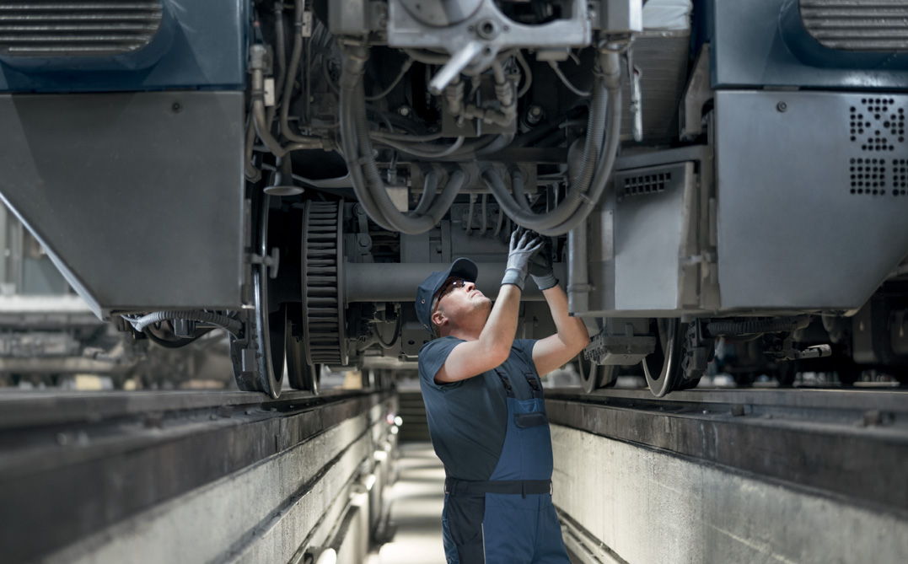

Voice-first. Diagnoses faults, walks technicians through the repair, and files FRA paperwork in the background — so trains move and your team doesn't drown in admin.
Defect cards and air brake tests pre-filled from voice and the steps actually performed.
Every prompt, response, and form revision is hashed and time-stamped.
Refuses to answer outside your maintenance manuals and historical work orders.
Customer data is never used to train models. Pick US, EU, or on-prem.
